La palabra "flashback", literalmente traducida al español, significa "retroceder", volver al pasado. Con esto en mente, Oracle implementa un concepto llamado Flashback. Para entender el concepto, miremos varios ejemplos. Oracle implementa diferentes tipos de Flashbacks.
FLASHBACK DROP TABLE
Se puede utilizar Flashback Drop Table, para restaurar una tabla eliminada por error humano. Para ello hace uso de las funcionalidades de lo que se denomina la Papelera de Reciclaje, la cual funciona muy parecido a la papelera de Windows.
Para ello, debemos activar la papelera de reciclaje. En este momento, la papelera está vacía.

Vamos a crear un nuevo usuario, por medio del cual vamos a hacer el ejercicio.
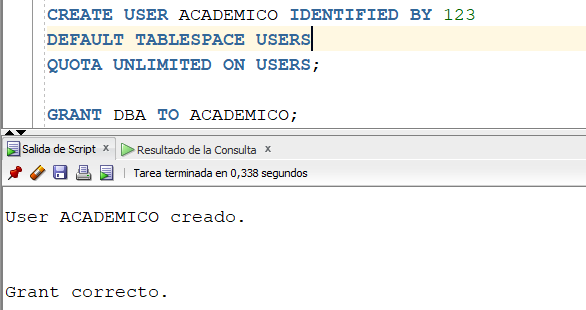
Desde el usuario recién creado, vamos a crear la siguiente tabla.
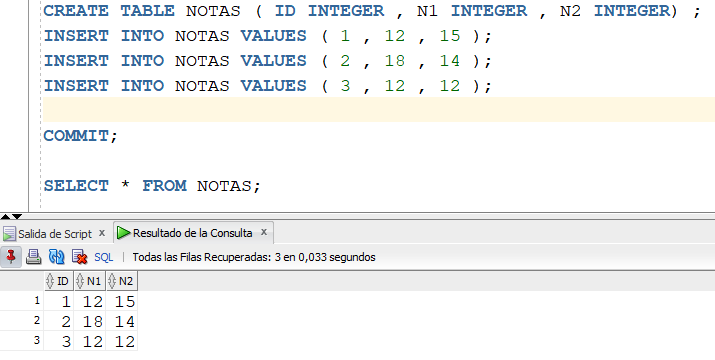
A continuación, vamos a eliminar la tabla, haciendo un DROP TABLE.
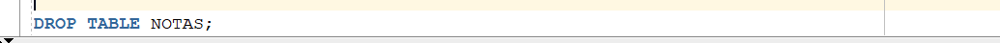
Vamos a volver a consultar la papelera de reciclaje. Notamos que ya no está vacía. De hecho, en la columna OBJECT_NAME aparece la tabla borrada con un nombre asignado por Oracle, pero en la columna ORIGINAL_NAME aparece la tabla NOTAS recién borrada.
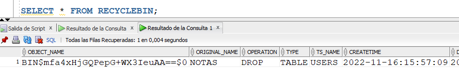
De hecho, si le hacemos un SELECT a la tabla con el nombre que hay en OBJECT_NAME, aparecen los datos de la tabla NOTAS original.
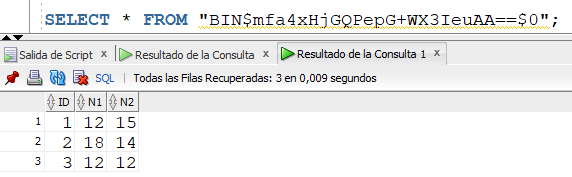
Y a través de una instrucción que existe en Oracle llamada FLASHBACK, podemos recuperar la tabla. El FLASHBACK TABLE TO BEFORE DROP permite recuperar una tabla que ha sido borrada con DROP, y lo hace a través del contenido de la papelera de reciclaje. Se puede mirar que la tabla NOTAS fue recuperada, incluyendo sus datos.
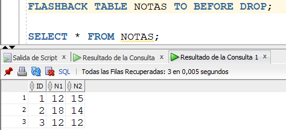
En algún momento el usuario puede desactivar la papelera de reciclaje.
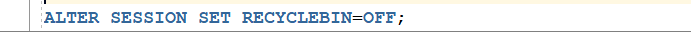
Miremos la implicación de tener la papelera de reciclaje desactivada. Creemos otra tabla, e insertemosle los datos de la tabla NOTAS.
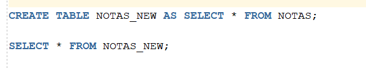

Borremos la tabla recien creada, NOTAS_NEW. Y luego consultemos la papelera de reciclaje. Como está desactivada, no hay nada en ella, y por lo tanto no se puede hacer FLASHBACK.
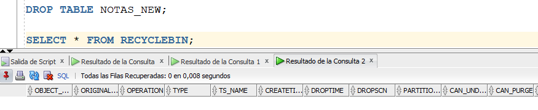
De hecho, si intentamos ejecutar el FLASHBACK, sale un error.
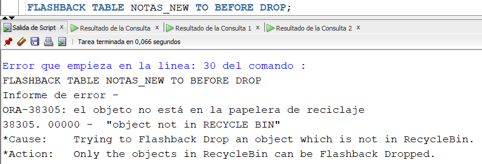
Por lo tanto, tener deshabilitada la papelera de reciclaje tiene estas implicaciones.
A continuación, vamos a hacer otro ejemplo para mirar como se manejan 2 versiones de una tabla. Vamos a volver a activar la papelera de reciclaje.
Borremos la tabla NOTAS, y consultemos la papelera de reciclaje.
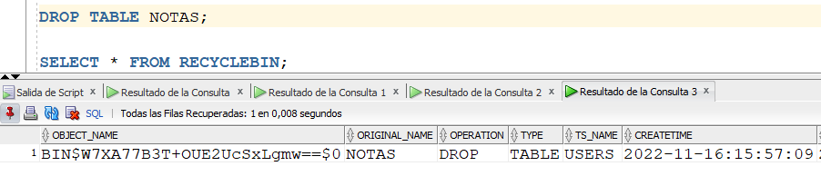
Ahora, creemos la misma tabla, NOTAS, pero con otra estructura y otros datos.
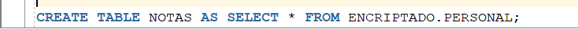
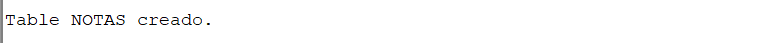
Si miramos ahora el contenido de la tabla NOTAS, hay unos datos diferentes, y la tabla tiene otra estructura a la original.
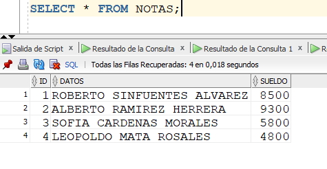
Ahora si borramos la tabla NOTAS y consultamos la papelera, tenemos lo siguiente. Recuerden que al principio del ejercicio habiamos borrado la tabla NOTAS, con sus valores originales. Y ahora la volvimos a borrar, con los nuevos datos. Por eso, en la papelera hay dos registros.
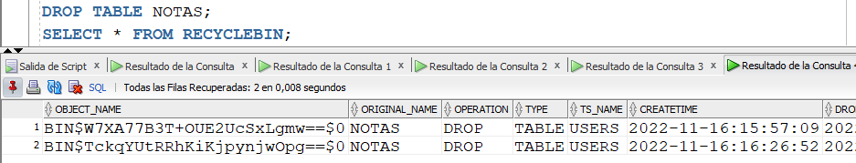
Verifiquemos el contenido de las tablas borradas y que se encuentran en la papelera de reciclaje:
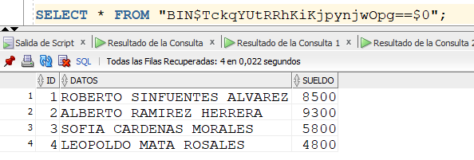
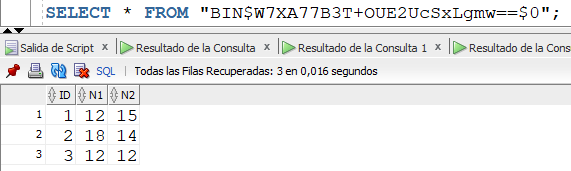
Para hacerle FLASHBACK a dos tablas que se llaman igual, y tienen datos y estructuras distintas, se tendría que hacer utilizando el nombre del objeto en la papelera, de la siguiente manera:
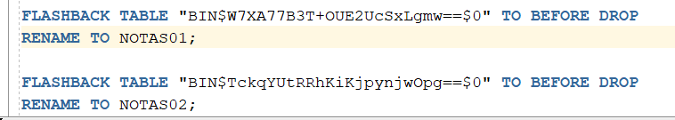
Ahora, hagamos un SELECT a las tablas NOTAS01 y NOTAS02. Encontramos los datos originales. Y la papelera de reciclaje está ahora vacía.
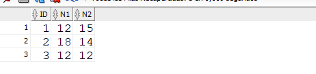
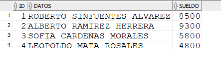
FLASHBACK TABLE
Usando Flashback Table, se puede recuperar un conjunto de tablas a un punto específico en el tiempo sin necesidad de realizar operaciones de recuperación de punto en el tiempo tradicionales.
Para hacer este tipo de flashback, vamos a crear la siguiente tabla.
Para hacer el ejemplo, consultemos el SCN (System Change Number) actual de la base de datos. El SCN es un consecutivo de todos los cambios que se van haciendo en la base de datos y en la instancia.
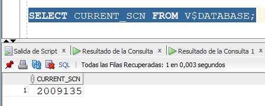
A continuación, insertémosle una tupla a la tabla recién creada, y luego volvamos a consultar el SCN.
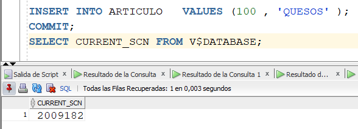
Luego, insertemos dos nuevas tuplas a la tabla, pero con cada tupla insertada, consultemos el SCN.
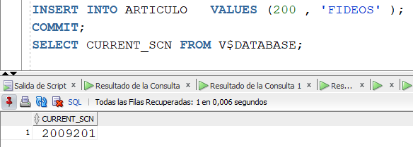
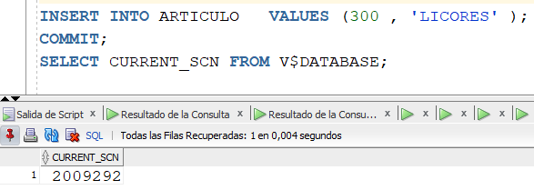
Miremos los datos que hay grabados en la tabla. Tener en cuenta que cada vez que se grababa una tupla, el SCN iba aumentando.
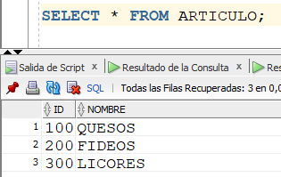
Recapitulemos en los SCNs consultados en los diferentes momentos del ejercicio.
| Momento | SCN |
| Cuando la tabla estaba vacía | 2009135 |
| Artículo 100 grabado | 2009182 |
| Artículo 100 y 200 grabados | 2009201 |
| Artículo 10, 200 y 300 grabados | 2009292 |
Supongamos que queremos restaurar la tabla al momento en el cual tenía grabado solo 2 artículos. Como vemos en la tabla anterior, el SCN que había inmediatamente después de grabar el segundo artículo era 2009201. Por lo tanto, la instrucción para hacer dicha recuperación es la siguiente:
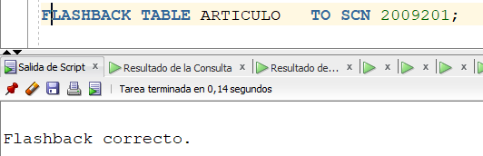
Luego miremos el contenido de la tabla. Tener en cuenta que la tabla tenía tres artículos grabados.
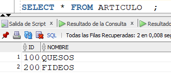
Acabamos de restaurar una tabla a un punto pasado del tiempo . A eso se refiere el FLASHBACK TABLE.
RESTAURACION DE LA BASE DE DATOS CON FLASHBACK
Para hacer esto, hay que poner la base de datos en modo flashback. Esto se debe hacer teniendo la instancia en modo MOUNT.
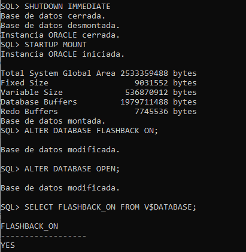
Para hacer el ejercicio, vamos a crear una nueva tabla y le vamos a insertar algunas tuplas.
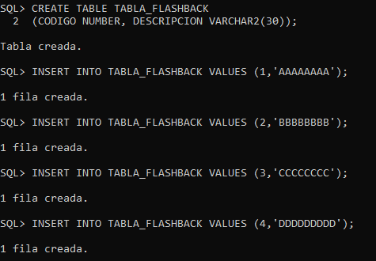
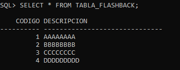
Ahora consultemos el SCN, despues de haber insertado las tuplas:
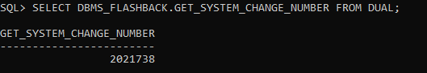
Luego, borremos todas las tuplas de la tabla recién creada, y volvamos a consultar el SCN:
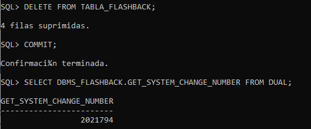
Vamos a restaurar la base de datos a un punto del tiempo, utilizando el SCN. Bajemos la instancia y la volvemos a subir en modo MOUNT. Luego de eso, ejecutamos el siguiente comando. La idea con restaurar la base de datos al SCN 2021738 es restaurarla al momento cuando la tabla TABLA_FLASHBACK tenía 4 tuplas grabadas.
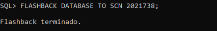
Luego de esto, se abre la base de datos con la cláusula RESETLOGS y vemos que la tabla contiene la 4 tuplas. La cláusula RESETLOGS siempre se debe usar al abrir la base de datos, despues de haberla restaurado con FLASHBACK. Esto con el fin de resetear los Redo Log Files que fueron recientemente sincronizados.
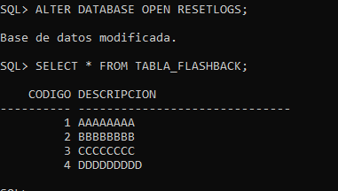
Videos: